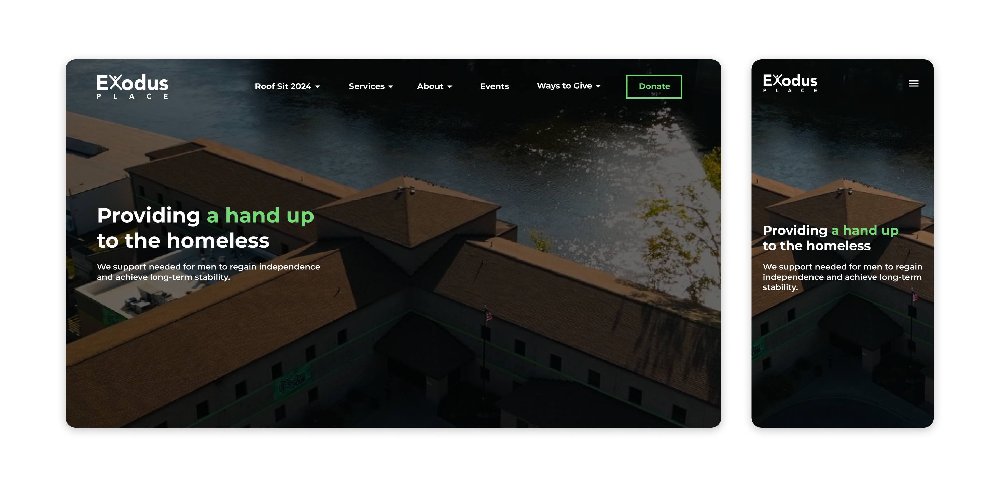
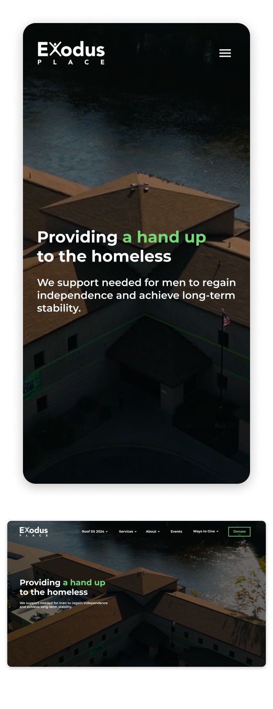

Technology
Figma, Inkscape, Krita, GRCMC custom platform
Service
Web Design, User Experience, Branding, SEO
Exodus Place, a non-profit organization providing transitional housing for homeless people in Grand Rapids, Michigan, needed redesigning their website. The redesign is a collaboration with the Exodus Place marketing team and GRCMC, focused on enhancing aesthetics, usability, and branding.
Result: website page views boosted by 173%.